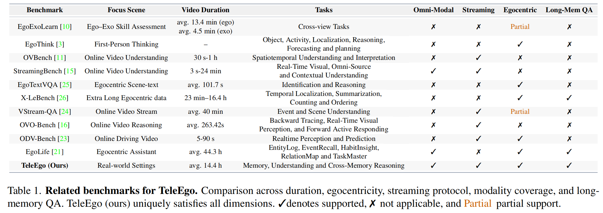
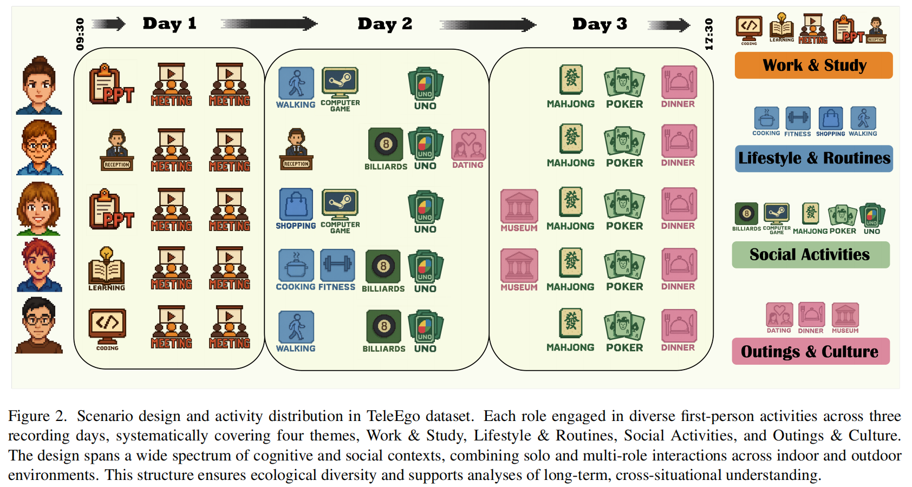
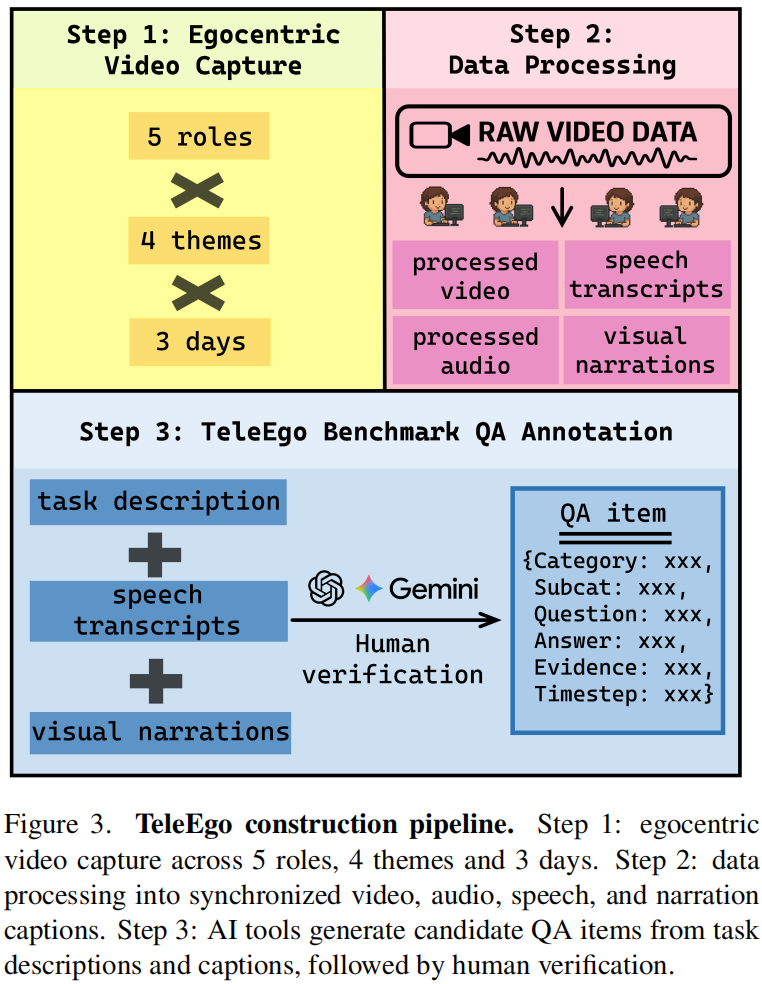
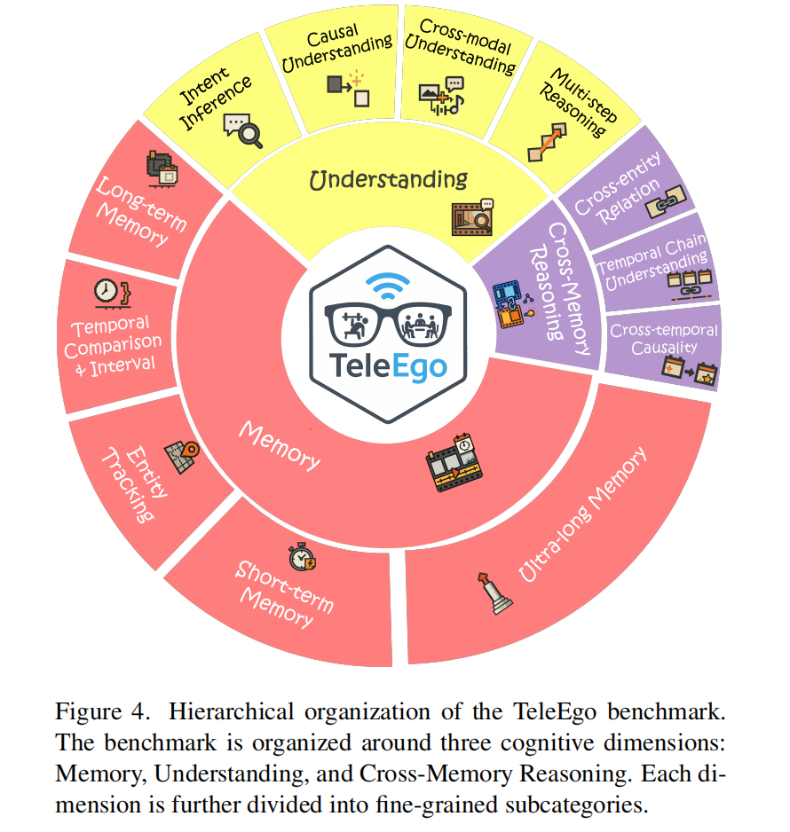
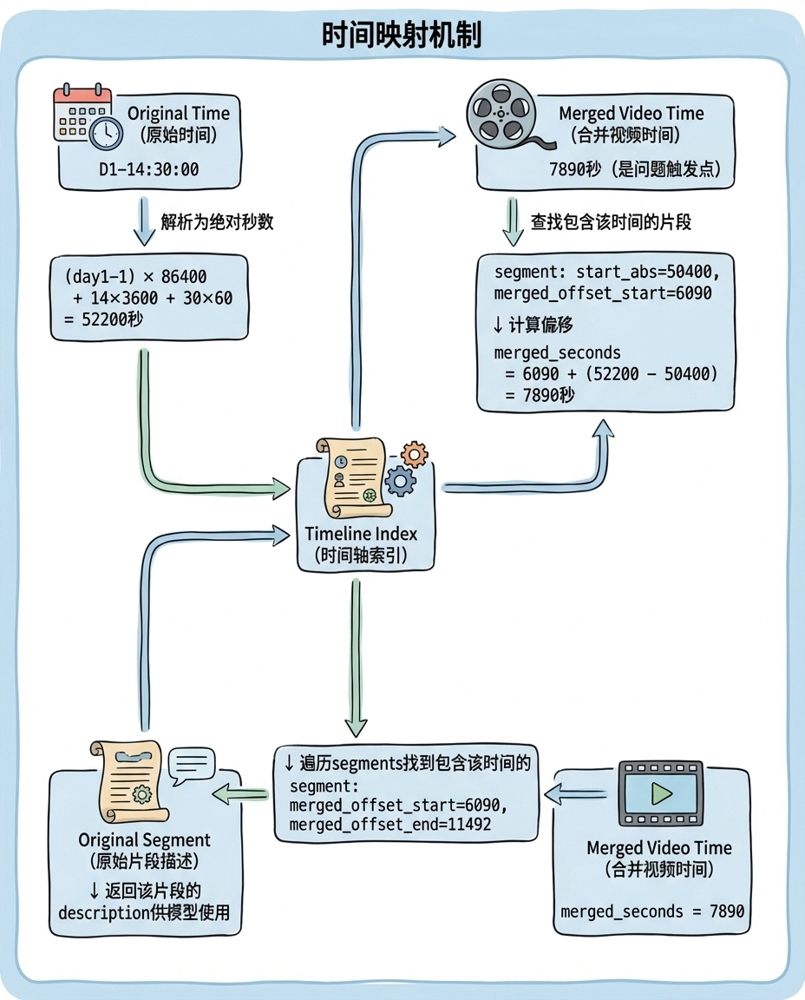
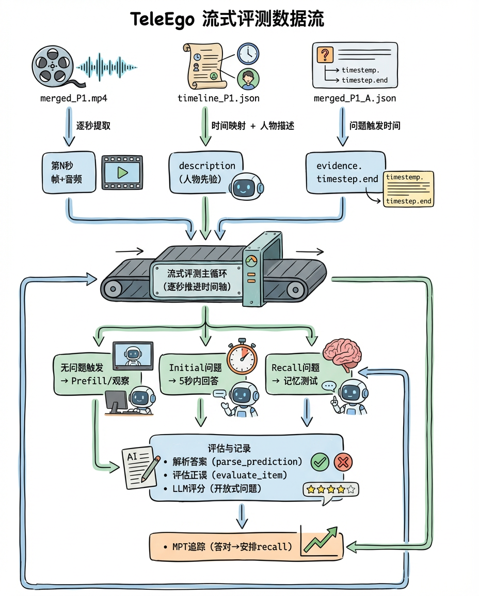
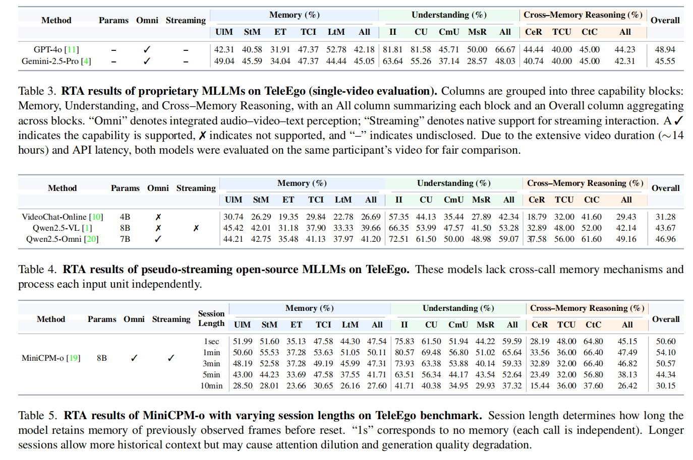
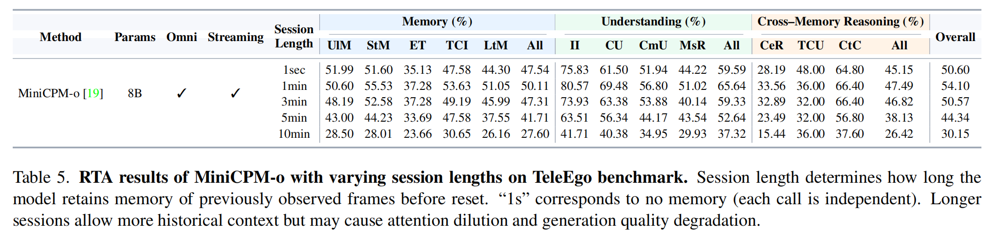

TeleEgo|流式全模态第一人称评测基准
背景与动机
第一人称AI助手指的是能够通过可穿戴设备（如智能眼镜、头戴相机）从用户的第一人称视角持续观察世界，理解用户正在做什么、看到什么、与谁交流，并在需要时提供智能帮助的AI系统。与传统的语音助手或聊天机器人不同，第一人称AI助手需要“看到”用户眼前的场景、“听到”周围的对话、“记住”过去发生的事情，并在恰当的时机主动或被动地给出建议。要真正实用，这些助手必须同时具备三项紧密整合的核心能力：
- 记忆能力，能够保留并回忆不断增长的过去信息流；
- 流式决策能力，能够在连续的音视频输入中及时做出判断；
- 多模态理解能力，能够以统一的方式解释摄像头看到的内容、麦克风听到的声音以及用户通过语言表达的意图。

现有benchmark在评估第一人称AI助手的这些能力时存在三大缺陷：
- 评估模式割裂，不能同时测记忆和实时性能：部分benchmark仅测试离线长期记忆（如X-LeBench），部分仅测试短窗口流式理解（如StreamingBench、VStream-QA）；
- 缺乏真实第一人称流式场景：大多数数据集使用第三人称或静态视频（如OVBench、StreamingBench、OVO-Bench），回避了自我运动和视角变化的挑战；少数第一人称数据集时长过短且局限于模态和特定任务（如ODV-Bench仅5-90秒的驾驶场景）；
- 缺乏长时连续的真实世界记录：多数benchmark由短片段或图像集构成（EgoThink，ODV-Bench），缺少统一的时间轴。
针对以上的问题，TeleEgo做了什么？
- 收集真实场景的长时连续数据：5个志愿者戴着第一人称相机连续拍摄3天（每人14小时以上），覆盖工作、生活、社交、外出等各种场景，把所有视频、音频、对话记录都对齐到一条统一的时间轴上——这样就能问“你早上9点做了什么？”和“下午3点那件事后来怎么样了？”这类跨越几小时甚至几天的问题；
- 设计了3291道不同类别的QA测试题：分成记忆（能不能记住过去）、理解（能不能看懂当前）、跨记忆推理（能不能把不同时间的事情联系起来）三大类，每道题都标注了答案需要的证据在视频的哪个时间点，这样就能精准知道模型到底哪方面能力不行；
- 提出2个指标，用“流式评估”的方式测试：
- RTA（实时准确率）：让模型像真人一样边看视频边回答问题，而且必须在限定时间内答出来，模拟真实助手需要及时响应；
- MPT（记忆持续时间）：答对一道题之后，过一段时间再问同样的问题，但不给原始画面，看模型能“记住”多久，来测AI助手的“健忘程度”。
一句话概括，TeleEgo是首个全模态第一人称benchmark，基于多场景、多任务、多模态的长时视频流，通过流式评估方式全面测试AI助手的记忆、理解和跨记忆推理能力。
数据集制作
数据采集设计

我们招募了5名参与者，男女平衡，来自不同地区、有不同文化背景和性格，尽量代表普通大众，这种设计避免了以往数据集的单一性问题（如单一家庭、单一实验室环境）。每位参与者需要佩戴第一人称可穿戴相机（egocentric wearable camera）连续录制3天，按照预定义的场景脚本，覆盖4大生活主题，既有独处也有群体互动，既有室内也有室外环境，以此来确保数据的时间连续性和情境多样性。视频平均时长14.4小时。
为了让AI助手真正能理解人类的日常生活，我们精心挑选了四类最常见的生活场景。每类场景都有自己的特点，也对应着不同的AI能力考验：
工作与学习：比如做演讲、开会、写代码、学习、前台接待等
- 特点：知识驱动型任务，需频繁使用工具、切换任务；
- AI能力挑战：追踪会议进度、记录关键信息、提供任务提醒——像一个智能助理；
社交活动：比如打牌（UNO、麻将、扑克）、打游戏、打台球等
- 特点：多人互动，轮次明确，手势语言并用，状态动态变化；
- AI能力挑战：理解游戏规则、识别社交信号、把握互动节奏——不仅要“看懂”还要“懂规则”；
生活日常：比如买菜、做饭、散步、健身等
- 特点：流程半结构化，涉及大量物品操作和习惯性动作；
- AI能力挑战：识别活动阶段、理解动作序列、推断隐含状态——掌握“生活常识”；
外出文化：比如下馆子吃饭、约会、逛博物馆
- 特点：复杂公共环境，光照音频多变，社交礼仪丰富；
- AI能力挑战：应对环境干扰、理解文化语境、处理突发状况——真实世界的“压力测试”
数据处理流程

原始的第一人称录制数据需要经过系统化处理，才能转化为可用于评测AI模型的标准化数据集。
隐私保护处理： 由于录制内容涉及真实人物和场景，我们对所有数据进行了严格的去标识化处理：对视频中的人脸进行模糊处理，移除非参与者的语音内容，遮盖任何可能泄露隐私的视觉或音频信息。这套处理方案在最大程度保护隐私的同时，保持了数据的生态真实性——AI仍能理解场景中的动作、物品和交互关系。
多模态数据对齐： TeleEgo的一大创新在于全局时间轴对齐机制。不同于传统数据集的片段化处理，我们构建了一个统一的时间坐标系：
- 时间轴构建：每个参与者3天的所有录制内容被映射到一条连续时间轴上，精度达到毫秒级
- 多流同步：视频帧、音频采样、语音识别结果通过时间戳严格同步，确保跨模态信息的时序一致性
- 事件锚定：关键事件（如”开始做饭”、”会议结束”）被标记为时间锚点，支持跨时段的事件关联查询
这种设计让AI可以回答“上午10点做了什么”或“午饭后发生了什么”这类需要时间推理的问题，真正模拟了人类的情景记忆机制。
双层文本标注体系：为增强数据的语义丰富度，我们构建了双层标注体系：
- 第一层：语音转录标注
- 将多人对话场景中的口语交流自动转录为文本，随后进行人工校验并标注说话人身份，形成完整的时序对话记录。
- 第二层：视觉叙述标注
- 参与者对正在进行的活动和关键环境细节进行口头描述，如”正在切菜”、”会议室有5人参会”等，关键动作和状态变化被详细记录，形成动作序列描述，场景切换和注意力转移被明确标注，帮助AI理解视角变化。
QA题目构建与验证：
- 基于处理好的多模态数据，我们使用GPT-4o分析多模态数据，理解场景语境和事件逻辑，根据12个认知维度的定义，生成覆盖不同能力的问题。生成的题目随后需要经过人工验证环节：核对事实准确性、确认时间戳标注正确、检查问题表述清晰度、验证答案的唯一性和正确性。
通过这一系列处理流程，我们将70多小时的原始多人录制数据转化为3291道高质量测试题，每道题都有精确的时间定位、多模态证据支撑，确保了评测的准确性和可解释性。
Benchmark任务设计

TeleEgo的任务设计围绕评估第一人称AI助手的多维认知能力展开，构建了一个层次化的评测框架。我们将AI助手的核心能力分解为相互关联但又各有侧重的三大核心认知维度，精心设计了12类细粒度问答任务：
Memory（记忆）- 58.8%题目
记忆维度评估模型对时间锚定信息的保持和检索能力。这一维度包含5个子任务：
| 子任务 | 英文名称 | 测试内容 | 示例问题 |
|---|---|---|---|
| 超长期记忆 | Ultra-long Memory | 测试10-60分钟跨度的事件记忆 | “回想近50分钟前，这份纸质文档是如何来我身边的？” |
| 短期记忆 | Short-term Memory | 评估几分钟内的瞬时状态回忆 | “我刚刚完成了哪项动作？” |
| 长期记忆 | Long-term Memory | 检验数小时前的活动细节保持 | “对比前两局五子棋，先手顺序的正确描述是？” |
| 实体追踪 | Entity Tracking | 持续跟踪特定对象或人物的状态变化 | “我（P1）的对家是谁？” |
| 时间比较与间隔 | Temporal Comparison & Interval | 判断事件的先后顺序和时间间隔 | “P3打出8筒先于P5打出8筒。对吗？” |
Understanding（理解）- 27.3%题目
在语境与意图理解维度中，我们聚焦于超越表层视觉描述的高层语义推理，包含四类任务：
| 子任务 | 英文名称 | 测试内容 | 示例问题 |
|---|---|---|---|
| 意图推理 | Intent Inference | 推断行为背后的目的和动机 | “P5 是否表达了此局形势对他不利的态度？” |
| 因果理解 | Causal Understanding | 识别事件间的因果关系链 | “为什么大家在 D3-16:54:50 左右笑了？” |
| 跨模态理解 | Cross-modal Understanding | 整合视觉、听觉、文本信息形成统一理解 | “我说“好冷呀”之后，紧接着在画面中的对应动作是什么？” |
| 多步推理 | Multi-step Reasoning | 通过多个推理步骤得出结论 | “以下哪些行为组成了“P4就第二阶段求解→记录要点”的多步链条？” |
Cross-Memory Reasoning（跨记忆推理）- 13.9%题目
在跨记忆事件推理维度，我们设计了三类高阶任务，要求模型在长期记忆与语境理解的基础上进行全局性整合：
| 子任务 | 英文名称 | 测试内容 | 示例问题 |
|---|---|---|---|
| 跨实体关系 | Cross-entity Relation | 推断不同实体间的动态关系演变 | “在定制与打包过程中，谁在为谁制作新杯子？” |
| 时间链理解 | Temporal Chain Understanding | 理解跨越多个时间段的事件序列 | “按时间顺序描述从P4打出6筒开始-新一局开始拿牌的关键动作链。” |
| 跨时间因果 | Cross-temporal Causality | 识别时间上分离但因果相关的事件 | “服务员在 D3-16:57:55 剪开我面前的食物后，最终发生了什么？” |
为平衡评测的标准化和表达性，我们采用四种互补的问答格式：单选题、多选题、判断题、开放式问答。
数据集结构讲解
TeleEgo的数据集设计围绕流式评估的核心需求，将多天、多场景的第一人称视频整合为统一的时间轴，并通过精细的元数据标注支持跨时间段的记忆推理评测。
目录结构总览
1 | ./TeleEgo/teleego_data |
数据集包含三个核心组件：合并视频（merged_Px.mp4）、时间轴文件（timeline_Px.json）和问答数据（merged_Px_A.json）。三者通过统一的时间戳系统关联，支持流式评测。
时间轴文件详解
时间轴文件（timeline_Px.json）是TeleEgo的核心创新之一，它建立了原始录制时间与合并视频时间之间的双向映射，使得问题可以用自然的”第几天几点几分”格式标注，而评测时能精确定位到合并视频的对应位置。
完整结构示例
以P1为例，其timeline_P1.json的结构如下：
1 | { |
字段详解：
| 字段名 | 类型 | 说明 |
|---|---|---|
profile |
string | 参与者编号，如”P1” |
dir |
string | 原始视频文件所在目录 |
day_prefix_used |
string | 时间标签的日期前缀格式，如”day”表示使用”day1-09:30:00”格式 |
videos_count |
int | 该参与者的原始视频片段数量 |
mapping_by_input_label |
object | 核心映射表：每个原始视频的详细元数据 |
intervals_array |
array | 视频片段的时间区间列表（简化版） |
input_labels_provided |
array | 所有视频的起始时间标签列表 |
merged_total_duration_seconds |
float | 合并视频的总时长（秒），P1约13.4小时 |
mapping_by_input_label 详解
这是时间轴文件最核心的部分，为每个原始视频片段提供完整的时间映射和场景描述。以P1第一天下午的会议视频为例：
1 | "D1-P1-pm-1-meeting-1_video_h264_fixed30.mp4": { |
各字段含义：
| 字段名 | 说明 | 示例值 |
|---|---|---|
start_label |
原始录制的开始时间（自然时间格式） | “day1-14:00:00” |
end_label |
原始录制的结束时间 | “day1-15:30:02” |
duration_seconds |
该片段的时长（秒） | 5402（约1.5小时） |
merged_offset_start_seconds |
该片段在合并视频中的起始位置（秒） | 6090 |
merged_offset_end_seconds |
该片段在合并视频中的结束位置（秒） | 11492 |
description |
人物先验描述：场景中所有人物的外观特征 | 见上方示例 |
人物先验描述 (description) 的作用
description字段提供了该视频片段中所有出场人物的详细外观描述，这是TeleEgo的一个重要设计：
- 身份识别：由于第一人称视角无法看到佩戴者自己，需要通过外观描述帮助模型识别”谁是谁”
- 上下文注入：在流式评测时，当视频切换到新片段，系统会将该片段的description作为system prompt注入，为模型提供人物身份先验
- 实体追踪支持：支持”Entity Tracking”类任务，模型需要持续追踪特定人物的行为
评测代码中的使用方式（摘自evaluate_qwen25_omni.py）：
1 | seg = timeline_idx.find_segment_for_offset(video_sec) |
时间映射机制
时间轴文件实现了双向时间映射：
原始时间 → 合并视频时间
合并视频时间 → 原始片段

问答数据详解
问答数据 （merged_Px_A.json）是一个JSON数组，每个元素代表一道测试题目。P1共包含593道题目，覆盖12个认知子类别。
问题结构示例
1 | { |
字段详解：
| 字段名 | 类型 | 说明 |
|---|---|---|
index |
int | 问题编号（1-593） |
category |
string | 认知维度大类：Memory / Understanding / Cross-Memory Reasoning |
subcategory |
string | 细分子类别，共12种 |
QA_type |
string | 题目类型：mc_single(单选) / mc_multi(多选) / binary(判断) / open_ended(开放) |
question |
string | 问题文本 |
options |
array | 选项列表（仅选择题有） |
answer |
object | 标准答案，包含type和value |
evidence |
object | 证据信息，包含描述和时间戳 |
modalities |
array | 所需模态：visual / audio |
answer字段结构：
| type值 | 说明 | value示例 |
|---|---|---|
single |
单选题答案 | ["A"] |
multiple |
多选题答案 | ["A", "B", "D"] |
boolean |
判断题答案 | [true] 或 [false] |
text |
开放式答案 | ["关键步骤描述..."] |
evidence字段是流式评测的关键：
1 | "evidence": { |
timestep.end：决定问题的触发时间点——模型必须在看到end时刻的视频后才能被提问timestep.start：答案所需证据的起始时间——模型需要记住从start到end之间的内容- 记忆跨度：
end - start反映了该题的记忆难度，从几秒（短期记忆）到几十分钟（超长期记忆）不等
P1视频片段一览
根据timeline_P1.json，P1的3天活动包含9个视频片段：
| 视频文件 | 时间 | 时长 | 场景 | 合并偏移 |
|---|---|---|---|---|
| D1-P1-am-ppt | Day1 09:30-11:11 | 1.7h | 单人PPT制作 | 0-6090s |
| D1-P1-pm-1-meeting-1 | Day1 14:00-15:30 | 1.5h | 5人会议 | 6090-11492s |
| D1-P1-pm-2-meeting-2 | Day1 16:00-17:08 | 1.1h | 5人会议 | 11492-15604s |
| D2-P1-am-walking | Day2 10:00-11:01 | 1h | 2人散步 | 15604-19265s |
| D2-P1-pm-1-computer_game | Day2 13:00-14:42 | 1.7h | 4人电脑游戏 | 19265-25425s |
| D2-P1-pm-2-uno | Day2 17:00-18:51 | 1.9h | 5人UNO | 25425-32124s |
| D3-P1-pm-1-majiang | Day3 13:00-14:46 | 1.8h | 5人麻将 | 32124-38493s |
| D3-P1-pm-2-poker | Day3 15:00-16:25 | 1.4h | 5人扑克 | 38493-43626s |
| D3-P1-pm-3-dinner | Day3 16:30-17:49 | 1.3h | 6人晚餐 | 43626-48418s |
总计：9个片段，约13.4小时，覆盖工作、社交、生活三大场景类型。
评估指标
TeleEgo设计了两个互补的核心指标，共同评估AI助手在流式场景下的综合表现。这两个指标不仅关注”答对了多少”，更关注”何时答对”和”记住多久”。
Real-Time Accuracy (RTA) - 实时准确率
定义与计算
RTA衡量模型在限定时间窗口内正确回答问题的能力：
- 决策窗口：每道题触发后的5秒时间限制
- 首次回答原则：只有第一次回答会被评判，防止多次猜测
- 时间约束：超时未答或过早回答都视为错误
与传统的离线QA准确率不同，RTA引入了时间维度的严格约束：
模拟真实交互：真实场景中，用户不会等待AI思考很久
防止作弊：避免模型通过看到未来内容来回答过去的问题
综合能力考察：同时测试理解能力和响应速度
评分细则
- 单选题/判断题：精确匹配选项
- 多选题：所有选项完全正确才得分
- 开放式问答：使用GPT-4o进行0-5分评分
Memory Persistence Time (MPT) - 记忆持续时间

定义与计算
MPT量化模型保持记忆的时长能力。对于在时刻$t^$首次答对的题目，其MPT定义为从$t^$到首次recall失败的时间间隔。
MPT实现机制
对于每个在时刻 $t^{}$ 正确回答的题目，我们安排最多10轮recall评估，分别在$t^{} + r\Delta$时刻进行（其中$\Delta = 60$秒，$r = 1, 2, …, 10$）。在每次recall评估时：
- 原始证据不会重播：模型只能访问当前正在播放的视频流
- 早停机制：一旦某轮评估失败，该题目将从后续轮次中移除
- MPT计算：该题的MPT即为从$t^{*}$到首次失败评估的时间间隔
特殊情况处理
- 从未答对：如果初始问答就错误，MPT记为0
- 全部通过：如果10轮recall全部正确（即持续600秒无遗忘），MPT记为600秒（上限值）
- 视频结束后的recall：即使视频播放完毕，系统仍会停留在最后一帧，继续逐秒计时，直到所有已安排的recall问题回答完成
流式评测实现
在智能眼镜、头戴设备等实际应用中，模型只能：
- 按时间顺序逐帧接收视频
- 在需要回答问题时立即响应
- 无法”回放”之前的画面
TeleEgo的评测方式正是模拟这种真实的第一人称实时场景：模型必须像真实AI助手一样”边看边答”，要面对”看过就要记住”的挑战。每次只给模型当前帧，模型必须依靠自身的记忆和理解能力来回答关于过去的问题。
本节将详细介绍流式评测的数据流、不同模型的实现方式差异，以及关键代码逻辑。
流式评测的整体架构
流式评测模拟了真实第一人称AI助手的工作场景：视频帧和音频持续输入，问题在特定时间点触发，模型必须在限定时间内基于已观看的内容给出回答。
数据流总览:

核心评测流程
1 | # 伪代码：流式评测主循环 |
不同模型的流式实现方式
TeleEgo支持评测多种多模态大模型，但不同模型的流式能力差异显著。我们将其分为真正流式和伪流式两类。
我们默认不简单粗暴地累积历史对话和视频（args.use_history=False），对于伪流式的模型，每次只传入当前帧和音频，因为我们希望考察的是模型自身的记忆能力，而非依赖将未经任何压缩或动态管理的原始历史简单堆叠到上下文中——后者只是把”记忆”的负担转嫁给了上下文窗口，本质上是一种外部存储而非模型内部的记忆机制。真正的流式记忆能力应当体现在模型对历史信息的压缩、筛选与动态管理上，而非简单地将所有历史无差别地塞入输入。
以下先举例几种伪流式的模型：
伪流式：VideoChat-Online
VideoChat-Online 提供了两种模型变体：
| 模型 | 说明 | 特点 |
|---|---|---|
| VideoChatOnline_Stream | 带 Pyramid Memory Bank | 对长视频进行层次化压缩 |
| VideoChatOnline_IT | Instruction Tuning 版本 | 依赖文本对话历史 |
VideoChatOnline_Stream的Pyramid Memory Bank机制
官方将 VideoChatOnline_Stream 称为”流式”模型，因为它内部实现了一个层次化的 Pyramid Memory Bank（短期/中期/长期三层记忆）。当某层容量满了，会将最相似的两帧合并，降采样后移到下一层。这种设计让模型能在有限的 token 预算内”记住”更长的视频。
视频特征提取分为三层函数，在每次次调用 chat() 时，都会进行：
1 | extract_feature (最外层：分批处理入口) |
extract_feature：分批处理，防止显存溢出
1 | def extract_feature(self, pixel_values, num_patches, is_video): |
extract_feature_bank：调用 ViT 编码图像，然后送入 Memory Bank
1 | def extract_feature_bank(self, pixel_values, num_patches, is_video, start_id=0): |
extract_feature_stream：逐帧更新 Memory Bank
1 | def extract_feature_stream(self, vit_embeds, cls_tokens, start_id): |
extract_feature结束循环后最后一次返回的 ret_vit_embeds 是整个 memory bank 的内容，包含了从所有帧中筛选/压缩出来的代表性帧。
Memory Bank 的一个重要特点是：它只在单次 chat() 调用内部存在。
1 | def extract_feature(self, pixel_values, ...): |
所以它的”Stream”指的是：每次调用 chat() 时，Memory Bank 模拟了一个滑动窗口式的记忆压缩过程——新帧进来，旧帧被压缩或丢弃。
但这不是我们想要的流式，因为：
- 整个过程发生在单次 chat() 调用内部
- 调用结束后
self.memorybank = None全部清空 - 下次调用要重新处理所有帧，两次调用之间无法维持记忆状态
VideoChatOnline_IT 的对话历史机制
VideoChatOnline_IT 采用了更直接的方式——通过文本对话历史来维护上下文：
1 | # modeling_videochat_online_finetune.py 中的 chat 方法（省略版） |
对话历史以 [(question1, answer1), (question2, answer2), ...] 的形式存储。每次调用时，历史对话被拼接成文本加到 prompt 中，而视频帧则通过 <image> 占位符标记位置，需要每次重新传入 pixel_values。
官方评测脚本分析
evaluate_online_stream_single.py
1 | pred, history = model.chat( |
特点：
- 使用
VideoChatOnline_Stream模型 - 每个问题都传入从视频开头到问题时刻的所有帧
- 不维护多轮对话历史
evaluate_online_stream_multiturn.py
1 | pred, history = model.chat( |
特点：
- 使用
VideoChatOnline_IT模型 - 每个问题传入所有历史帧 + 累积的对话历史
- 随着视频推进，
pixel_values[:clip[1]]越来越长，prompt 也会越来越长
evaluate_online_sliding_window.py
1 | # 只传入滑动窗口内的帧 |
特点：
- 使用
VideoChatOnline_IT模型 - 只能看到窗口内的帧
- 不维护对话历史
我们的评测设计
综上分析，VideoChat-Online在TeleEgo的应用场景下属于“伪流式”。VideoChat-Online 官方的评测方式在我们的长时实时场景下也不可行，原因有二：
- 每次传入所有历史帧：模型不需要”记住”任何东西，因为所有历史信息都在当前输入中。这是一种”开卷考试”——答案就在眼前，只需要找到它。
- 上下文长度不可持续：即使采用累积对话历史的方式，随着视频推进，历史帧数和对话文本都在不断增长。对于 TeleEgo 这种长达数小时的视频，累积的 token 数量将远超任何模型的上下文窗口限制。这种”无限制保存所有历史”的方式在长时场景下根本不可行。
在真实的第一人称实时场景中（如智能眼镜、头戴设备），视频流是逐帧到达的，用户随时可能提出问题。此时模型不可能”暂停时间”去重新处理之前几小时的所有帧——它必须依靠自身对过去信息的记忆来回答问题。TeleEgo 想考察的是：当过去的画面已经消失、只剩下当前帧时，模型能否回忆起之前发生的事情？ 这才是真正的记忆能力，也是第一人称实时场景的核心挑战。因此，我们的评测代码采用了严格流式的方式，每次只传入当前时刻的音画：
1 | # evaluate_videochat_online.py 核心逻辑 |
这里 history=None 意味着我们不将历史对话原样拼接到输入中——模型需要依靠自身的能力来”记住”之前看到的内容，而非完全依赖外部存储。
伪流式：Qwen2.5-Omni
Qwen2.5-Omni 是阿里推出的端到端多模态模型，支持文本、图像、音频、视频的输入和文本、语音的输出。与 MiniCPM-o 不同，Qwen2.5-Omni 没有提供显式的流式输入接口——没有类似 start_session()、input_video_stream() 这样的方法，也没有跨调用保持的 session 机制。
官方的多轮对话方式
从官方示例可以看到，Qwen2.5-Omni 的多轮对话通过累积 conversations 列表实现：
1 | # Omni Chatting Round 1 |
这与 VideoChat-Online 的对话历史机制本质相同：将所有历史对话和视频原样存储，每次推理时全部传入。对于 TeleEgo 这种长达数小时的视频流，这种方式会导致 token 数量持续增长，很快超出上下文窗口限制。
接口层面的限制
严格来说，Qwen2.5-Omni 底层也支持 past_key_values——这是 Transformer 模型的通用机制。但问题在于：它没有提供封装好的”逐帧输入-持续积累-按需生成”接口。
TeleEgo 的第一人称实时场景需要的是：
1 | 理想的流式处理： |
MiniCPM-o 提供了 streaming_prefill() 和 streaming_generate() 两个独立的方法，可以实现”存存存…然后在特定时刻 generate”的模式。而 Qwen2.5-Omni 没有这样的接口分离。它的”流式”更多体现在语音输出的流式生成（边生成文本边合成语音），而非视频输入的流式处理。每次调用都是完整的”输入→生成”流程，无法做到”只输入不生成”的增量积累。
因此在 TeleEgo 的评测中，我们每次都需要完整地调用 generate()，无法利用增量计算的优势。
我们的评测设计
与 VideoChat-Online 类似，Qwen2.5-Omni 在 TeleEgo 场景下属于伪流式：
- 无跨调用记忆：每次
generate()调用都是独立的推理过程，模型内部没有持久化的记忆模块 - 历史累积不可行：唯一让模型”记住”历史的方式是累积
conversations，但这会导致 token 数量随时间线性增长，几分钟后就会超出上下文限制 - 全量重编码：即使累积历史，每次调用也需要重新编码所有内容，没有增量计算的优化
正如前面所提到过的，我们默认不简单粗暴地累积历史对话和视频（args.use_history=False），每次只传入当前帧和音频：
1 | # evaluate_qwen25_omni.py 核心逻辑 |
这里有几个技术细节需要说明：
1. 单帧输入的处理
"video": [image] 传入的是单帧图像列表。Qwen2.5-Omni 内部有 FRAME_FACTOR = 2 的限制，要求帧数必须是 2 的倍数。当传入单帧时，模型会自动复制成 2 帧以满足这一要求。
2. 音视频 Token 对齐
1 | text = processor.apply_chat_template(conversations, tokenize=False, add_generation_prompt=True) |
这段代码的逻辑是：
apply_chat_template会为单独传入的"audio"生成<|audio_bos|><|AUDIO|><|audio_eos|>占位符，但这个占位符没有与视频帧时序对齐- 后续
processor(..., use_audio_in_video=True)会重新生成与视频帧交错对齐的音频占位符 - 因此需要手动删除前者，避免重复
3. process_mm_info 的参数
process_mm_info(conversations, use_audio_in_video=False) 中设为 False，是因为我们的 "video" 字段传入的是帧列表 [image] 而非视频文件路径，音频通过单独的 "audio" 字段传入。实际的音视频对齐在后续的 processor() 调用中通过 use_audio_in_video=True 完成。
4. TMRope 时序对齐
Qwen2.5-Omni 使用 TMRope（Time-aware Multimodal Rotary Position Embedding）编码多模态输入的时序关系。设置 seconds_per_chunk=1.0 后，1 秒音频和 1 帧图像就会被对齐到同一个 chunk 中：
1 | <|vision_bos|><|audio_bos|> |
流式模型：MiniCPM-o 2.6
与前面两个模型不同，MiniCPM-o 提供了显式的流式输入接口，支持”逐 chunk 输入”的使用模式。
显式的流式接口
MiniCPM-o 提供了三个核心方法：
| 方法 | 作用 |
|---|---|
reset_session() |
重置会话，清空 KV Cache |
streaming_prefill() |
增量输入一个 chunk（1帧图像 + 1秒音频），更新 KV Cache |
streaming_generate() |
基于当前 KV Cache 生成回答 |
streaming_prefill 的核心实现：
1 | # modeling_minicpmo.py 中的 streaming_prefill 方法（简化版） |
与其他模型的对比：
- Qwen2.5-Omni：底层有
past_key_values，但没有暴露 “只 prefill 不 generate” 的接口 - VideoChat-Online：Memory Bank 在每次
chat()结束后清空，无法跨调用保持 - MiniCPM-o：
streaming_prefill()和streaming_generate()分离，支持”存存存…然后 generate”
流式接口的局限
虽然 MiniCPM-o 提供了显式的流式接口，但它没有设计动态的记忆管理机制。KV Cache 只是维持”记忆”的方法之一，而 MiniCPM-o 只是简单地让 KV Cache 不断增长，没有任何压缩、淘汰或滑动窗口策略。
这导致了两个问题：
- 显存溢出：随着视频输入时间增长，KV Cache 膨胀，最终会出现 CUDA Out of Memory
- 生成质量下降：即使显存足够，过长的 KV Cache 也会导致模型注意力分散，出现胡言乱语的情况
我们的评测设计
由于 MiniCPM-o 没有内置的记忆管理，我们在评测代码中手动设置了 session 窗口大小，每隔一段时间重置记忆：
1 | # evaluate_minicpm_o.py 核心逻辑 |
其中 stream_with_timeout 调用了 streaming_generate：
1 | def stream_with_timeout(session_id): |
MiniCPM-o 是我们评测的三个模型中唯一提供真正流式接口的。它支持逐 chunk 增量输入，但由于缺乏动态记忆管理，实际使用时需要手动控制 session 窗口大小。这也反映了当前流式多模态模型的一个共性问题：如何在有限资源下高效管理长时记忆，仍是一个开放的研究方向。
关键代码逻辑详解
时间戳映射（TimelineIndex）
问题的触发时间以自然语言格式标注（如”D1-14:30:00”），需要转换为合并视频中的秒数：
1 | class TimelineIndex: |
问题队列管理
问题按触发时间排序，支持动态插入recall问题：
1 | # 初始化队列（仅initial问题） |
人物先验注入
当视频切换到新片段时，将人物描述作为system prompt注入：
1 | seg = timeline_idx.find_segment_for_offset(current_sec) |
5秒决策窗口
通过自定义StoppingCriteria实现超时控制：
1 | class TimeLimitStoppingCriteria(StoppingCriteria): |
答案解析与评估
根据题目类型采用不同的解析和评估策略：
1 | def parse_prediction(text: str, qtype: str): |
MPT追踪机制
记录每道题的首次答对时间和recall结果：
1 | mpt_tracker = {} # {index: (t_star, [True, True, False, ...])} |
实验结果
RTA 指标结果
我们在 TeleEgo 数据集上评测了多个多模态模型，结果如下表所示：

分析
伪流式模型
VideoChat-Online、Qwen2.5-VL、Qwen2.5-Omni 三个模型在我们的严格流式评测下，每次只能看到当前帧，无法访问历史信息。
音频输入能力的差异
这三个模型在音频处理能力上存在显著差异：
- Qwen2.5-Omni：是真正的 Omni 模型，支持音频的直接输入，能够端到端地理解语音内容
- VideoChat-Online、Qwen2.5-VL：不支持音频直接输入，我们只能通过 ASR（语音识别）将音频转写为文字，再作为文本加入 prompt
语音转写的过程不可避免地引入误差——口语中的停顿、语气词、背景噪音都可能导致转写错误，进而影响模型的理解。
结果分析
- Understanding 类任务表现尚可：这类任务主要依赖当前帧的理解能力，Qwen2.5-Omni 在 II（Immediate Identification）上达到 72.51%
- Memory 类任务表现较差：由于无法维持跨帧记忆，这类需要回忆过去信息的任务准确率普遍偏低
- Cross-Memory Reasoning 类任务表现较差：需要整合多个时间点的信息进行推理，伪流式模型在此类任务上表现也较弱
三个伪流式模型中，Qwen2.5-Omni 表现最好（Overall 46.96%），这得益于两方面：一是其音视频联合理解能力——即使只看当前帧，音频中的语音信息也能提供额外线索；二是避免了 ASR 转写带来的误差累积。
流式模型：MiniCPM-o
MiniCPM-o 是唯一支持真正流式输入的模型。我们测试了不同 session 窗口长度下的表现：
关键发现：session_length 存在最优区间
- 1min 窗口效果最佳：Overall 达到 54.1%，是所有模型中最高的
- 窗口过大反而有害：3min 降至 50.57%，5min 降至 44.34%，10min 仅 30.15%
这一现象的原因是：MiniCPM-o 没有设计动态的记忆管理机制。随着 KV Cache 不断增长：
- 注意力稀释：模型需要在越来越长的历史中寻找相关信息，导致注意力分散
- 生成质量崩塌：session_length 超过 3 分钟后，模型开始出现文不对题、胡言乱语的现象
下图展示了 session_length 设置为不同值时的 RTA：

从表格可以看出，1分钟左右是最优的 session 窗口区间。这个区间既能保留足够的短期记忆来回答问题，又不会因为 KV Cache 过长而导致性能下降。
长 session 下的生成紊乱现象
当 session_length 设置过大时，MiniCPM-o 的生成质量会明显下降，出现文不对题、输出混乱的现象。以下是一个典型示例：
1 | { |
可以看到，模型的输出完全偏离了问题：它没有尝试回答选择题，而是输出了一段混乱的内容——包含特殊 token <|listen|>、无关的英文片段、以及系统提示词的碎片。这表明在长时间运行后，模型的注意力机制已经无法正常工作，KV Cache 中积累的大量历史信息干扰了正常的推理过程。
API 模型：GPT-4o 与 Gemini 2.5 Pro
GPT-4o 和 Gemini 2.5 Pro 通过 API 调用，其内部实现对我们是黑盒。
评测方式
对于 GPT-4o，我们每次 API 调用只传入当前帧和问题；对于 Gemini 2.5 Pro，我们使用了 chat.send_message_stream() 接口。Gemini 的 Chat SDK 会自动在内部维护对话历史。为了考察模型本身的记忆能力而非 SDK 提供的历史累积功能，我们在每次调用后手动清空历史：
1 | # evaluate_gemini25_pro.py |
评测范围说明
由于 TeleEgo 的视频时长较长（单条视频长达十多个小时），而 API 模型部署在云端，每次请求都涉及网络传输和排队等待，逐秒调用的评测流程耗时较长。目前我们仅对 GPT-4o 和 Gemini 2.5 Pro 各完成了 P2 一条视频的评测。在后续工作中，我们会补全其余视频的评测结果。
结果分析
GPT-4o 的 Understanding 能力突出（II 达到 81.81%，CU 达到 81.58%），显著领先其他模型。这是因为 Understanding 类任务主要基于语义理解和常识推理，不需要精确的时间定位，模型可以利用其强大的”通用知识”来辅助判断。
Understanding 与 Memory 的能力错位
从结果中可以观察到一个普遍现象：几乎所有模型的 Understanding 表现都显著优于 Memory 和 Cross-Memory Reasoning。
这种能力错位并非偶然。Understanding 类任务（如场景识别、动作理解、常识推理）很大程度上可以依赖模型的先验知识来”自圆其说”——即使没有看到完整的上下文，模型也能根据当前帧的视觉线索，结合自身训练时学到的世界知识，给出合理的推测。例如，看到厨房场景就可以推测”在做饭”，看到办公桌就可以推测”在工作”。
而 Memory 类任务则完全不同。当问题是”刚才放下的钥匙在哪里”或”之前遇到的那个人叫什么名字”时，模型无法依靠先验知识来回答——这些信息是特定于当前视频的，必须通过真正的”记忆”才能获取。没有记忆机制的支撑，模型只能依赖当前帧碰巧包含的信息，或者干脆猜测。特别是涉及实体追踪的任务——这类任务需要持续追踪目标，不是一次性识别就能完成，而是需要跨时间维持对实体状态的感知。
Cross-Memory Reasoning 也很具挑战性：它不仅需要记住多个时间点的信息，还需要将它们整合起来进行推理。例如”早上说要买的东西，下午买了吗？”这类问题需要同时回忆早上的对话内容和下午的购物行为，然后进行对比。
这一发现揭示了当前多模态模型的核心局限：它们更像是”理解者”而非”记忆者”——能够理解当下看到的内容，却难以记住过去发生的事情。
关于 MPT 指标
我们在指标设计中提出了 MPT（Memory Persistence Time）来衡量记忆持久性。然而，当前评测结果中并未包含 MPT 指标。
原因在于：MPT 指标要求模型在首次答对问题后，能够在后续的 recall 测试中持续答对。这需要模型具备真正的长期记忆能力——不仅能在信息刚出现时正确回答，还能在信息消失很久后依然记得。
从我们的评测结果来看，当前模型都不适合进行 MPT 评测：
伪流式模型（VideoChat-Online、Qwen2.5-VL、Qwen2.5-Omni）：每次调用都是独立的，根本没有跨调用的记忆。在这种情况下测 MPT 没有意义——模型第一次可能因为当前帧恰好包含相关信息而答对，后续的 recall 测试即使答对，也只是基于相同的”猜测策略”而非真正的”记忆”。换句话说，如果一个没有记忆的模型在 initial 和 recall 阶段都答对了，我们无法区分这是”记住了”还是”又蒙对了”。
API 模型（GPT-4o、Gemini 2.5 Pro）：其内部实现对我们是黑盒。我们通过 API 调用进行评测，这与面向用户的聊天界面（如 ChatGPT App、Gemini Web UI）可能存在差异。在我们的评测设置下（不简单粗暴地累积历史），它们面临与伪流式模型相同的问题。
流式模型（MiniCPM-o）：虽然支持流式输入和跨调用的 KV Cache，但由于其缺乏动态记忆管理，我们不得不每隔几分钟手动重置 session。这导致了一个尴尬的情况：如果某个问题的 initial 测试和 recall 测试恰好跨越了 session 重置的边界，那么模型的记忆在两次测试之间被人为清空了——此时即使 recall 失败，我们也无法判断是模型”遗忘”了，还是因为 session 重置导致的。这使得 MPT 的测量结果不具备可比性。
MPT 是一个面向未来的指标。当前在模型层面真正实现流式处理、具备长期记忆能力的模型还非常稀少。我们相信，随着流式多模态模型的发展，会有更多模型具备真正的长期记忆能力——能够在不重置 session 的情况下持续运行数小时，同时保持稳定的生成质量。届时，MPT 将成为评估这些模型的重要指标。我们将 MPT 的评测框架和代码开源，供后续研究者使用。
其他模型的适配问题
我们也尝试将一些其他视频理解模型适配到 TeleEgo 的流式评测框架中，但发现存在一些根本性的不兼容。
M3-Agent
M3-Agent 采用逐 clip 输入的方式，默认以 30 秒为一个 clip，每个 clip 提取对话、动作等信息存入记忆模块。这种设计在处理 30 分钟左右的视频时是合理的——30 秒的片段通常包含完整的对话轮次和有意义的动作序列。
但如果将 M3-Agent 的信息提取方式应用到 TeleEgo 的评测pipeline中，会遇到粒度不匹配的问题：M3-Agent 的记忆提取模块是为 30 秒的完整片段设计的，期望从中提取出完整的对话内容和动作描述。而在 TeleEgo 的 1 秒粒度场景下，按照这种做法对每个 1 秒片段进行信息提取，难以获得有意义的结构化记忆——这并非 1 秒输入本身没有价值，而是 M3-Agent 的提取方式不适配这一粒度。
StreamChat
StreamChat 采用分层记忆存储（Hierarchical Memory Storage）的设计，包括短期记忆、长期记忆和对话记忆。其中，长期记忆的构建依赖于对视频片段进行 captioning——将一段视频的视觉特征压缩为文本描述（text clues），作为后续检索的索引。
这种方式在我们的pipeline中仍是伪流式。问题在于：captioning 需要调用 MLLM 进行文本生成（自回归逐 token decode），这比单纯的前向传播（prefill）慢得多。按照我们对流式的定义，模型需要能够逐秒接收输入。如果每一秒都要 generate 一段文本摘要，推理速度将远远跟不上实时输入的速度。
这些模型的设计思路各有其合理性，但都基于一个隐含假设：视频输入是预先分段的。而 TeleEgo 的评测场景——14 小时的连续的视频流、随时可能出现的问题、1 秒粒度的实时输入——对模型提出了更严格的要求。
小结与展望
通过对多个多模态大模型在 TeleEgo 上的评测与分析，我们发现当前模型在流式视频理解任务上仍面临显著挑战。
伪流式模型（VideoChat-Online、Qwen2.5-VL、Qwen2.5-Omni）虽然能够处理视频输入，但本质上是”一次性”的推理模式——每次调用都是独立的，模型无法在多次调用之间保持对视频流的持续感知。这意味着随着视频时长增加，要么需要重复编码大量历史帧导致计算开销激增，要么只能丢弃早期信息导致记忆能力受限。
流式模型（MiniCPM-o）展现了真正的流式处理能力：通过 KV Cache 的跨调用持久化，模型能够增量处理视频流而无需重复编码历史内容。然而，由于缺乏动态的记忆管理机制，随着 session 时长增加，注意力逐渐稀释、生成质量下降，实际可用的 session 长度被限制在 1-2 分钟左右。
TeleEgo 的评测结果揭示了当前多模态大模型在流式场景下的能力边界，也指明了未来研究的方向。
动态记忆管理是实现长时间流式理解的关键。理想的模型应当能够在持续接收视频流的同时，智能地决定哪些信息值得长期保留、哪些可以压缩或遗忘。这不仅是工程优化问题，更涉及到对”记忆”本质的建模——如何在有限的计算资源下，维持对长时间跨度事件的连贯理解。
MPT（Memory Persistence Time）指标目前对所有测试模型都不适用，但它代表了我们对未来模型的期待：能够在不重置 session 的情况下持续运行数小时，同时保持稳定的生成质量和可靠的记忆能力。当这样的模型出现时，MPT 将成为衡量其记忆持久性的重要指标。
从更宏观的视角看，流式全模态第一人称理解不仅是技术挑战，更是通向具身智能和实时人机交互的必经之路。一个能够持续观察环境、积累经验、并在需要时调用相关记忆的 AI 系统，将在机器人、智能助手、增强现实等领域发挥重要作用。TeleEgo 作为一个评测基准，希望能为这一方向的研究提供有价值的参考。